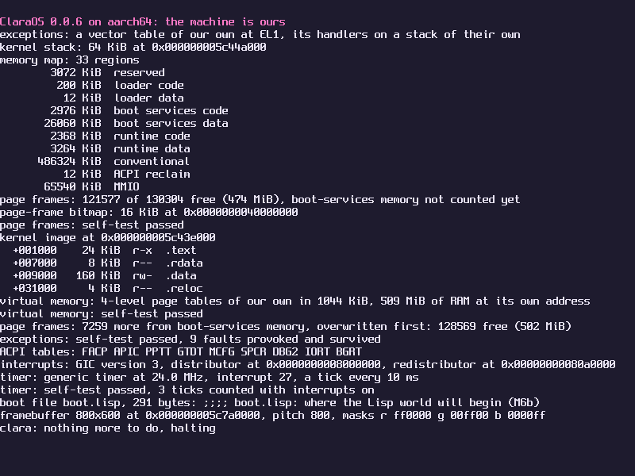

A small operating system for x86_64 and AArch64, written to be read from the first instruction up.
Those two lines at the top are what the kernel prints when it takes over from the firmware. ClaraOS is a Lisp machine in the making: a C kernel small enough for one person to hold in their head, under a world written in Common Lisp. The plan is to boot into a window manager whose applications are Lisp programs. It is not a Unix, and it does not try to run Linux software.
Read the source Design Roadmap
{{spleen:The shape}}
The substrate is the C kernel. It brings up the processor, hands out memory, runs threads, takes interrupts, and holds the Lisp runtime itself: the reader, the evaluator and the garbage collector.
The world is Lisp: the console and the REPL, the logic of the drivers, the filesystem, the window manager and every application.
One address space, one heap, no user mode. Lisp code cannot forge a pointer, so protection comes from the language and not from page tables. An application that fails is a condition for the window manager to handle.
The Lisp is a subset of Common Lisp, chosen so that every file also loads under SBCL on an ordinary computer, where it is written and tested.
The image is the system. Booting will mean loading a saved heap from disk and carrying on where it stopped, with the window manager running.
{{spleen:Where it is}}
Version {{version}}. {{done}} of {{total}} milestones are finished, the latest being {{latest}}. A milestone counts as finished when the machine boots and passes its own checks on both architectures.
{{roadmap}}The roadmap says what each milestone holds and what was left open along the way.

{{spleen:Run it}}
On macOS with Homebrew. clang builds both architectures and QEMU boots them, with the same firmware UTM uses.
brew install llvm lld qemu
git clone https://github.com/the-clara-os/clara-os
cd clara-os
make test # boot both architectures without a window
make run-aarch64 # a QEMU window, the serial port on your terminalThe README has the steps for running it in UTM.